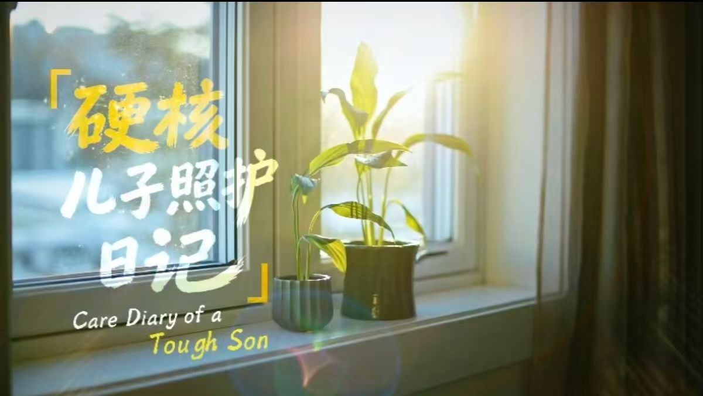
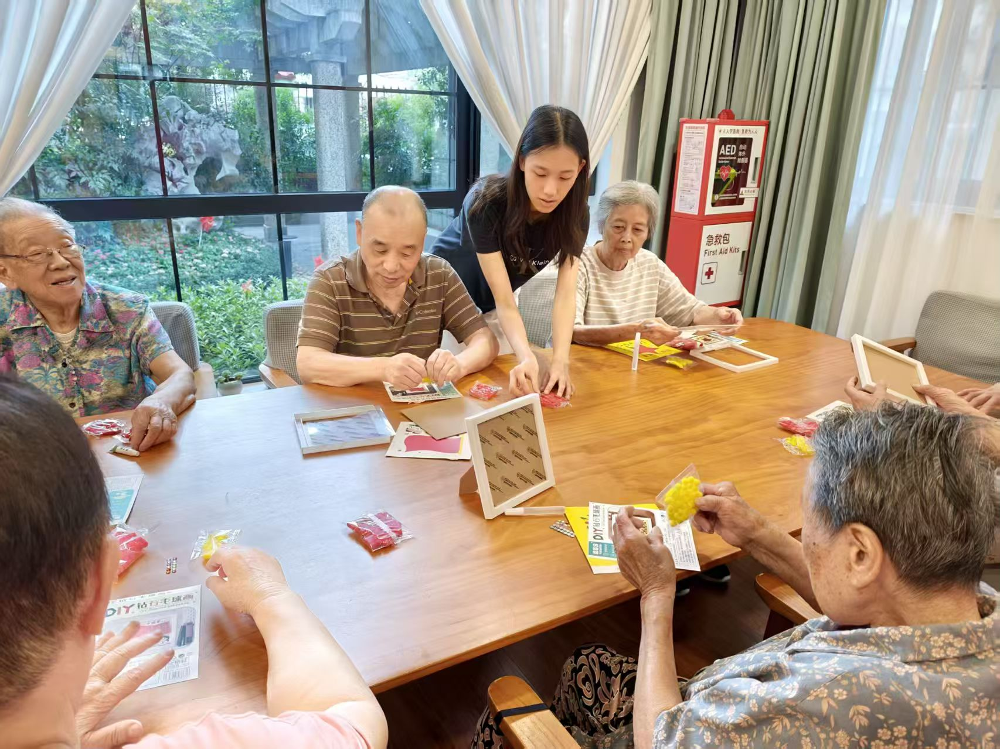
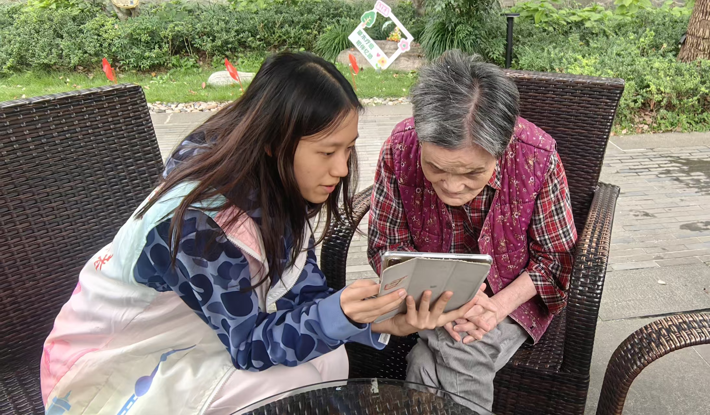
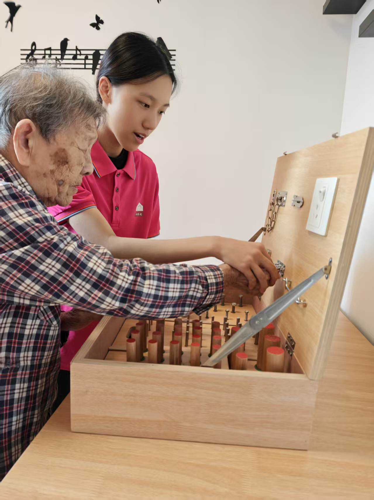
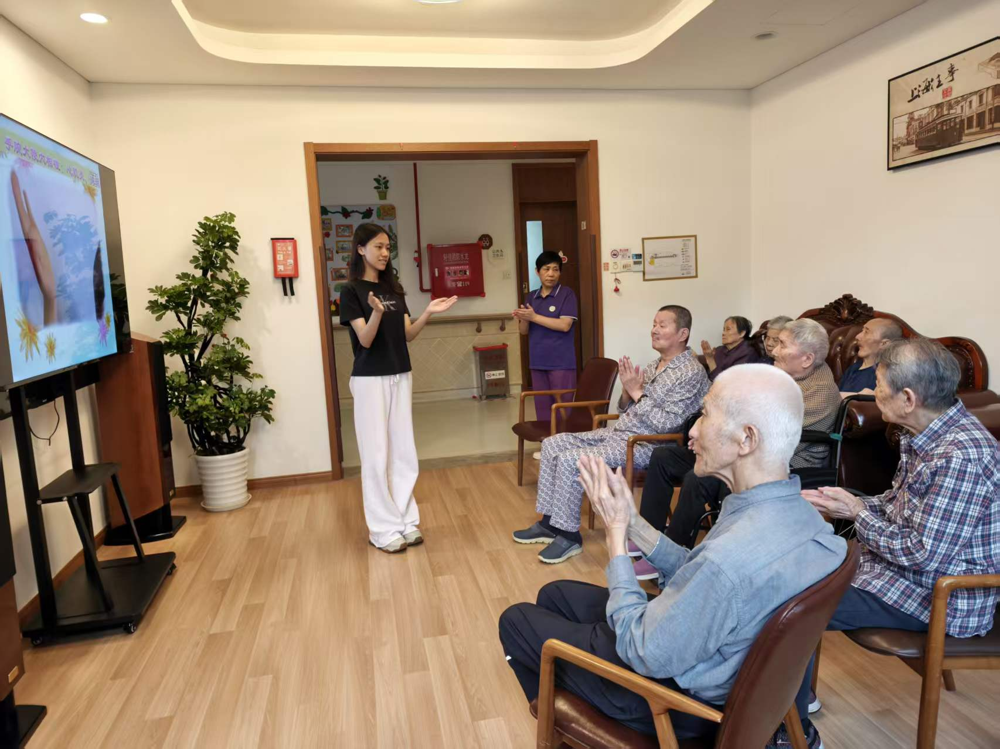
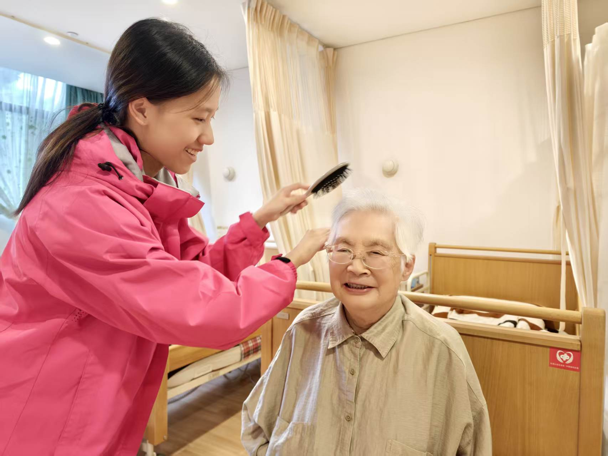

01 / Quantitative sociology
The social dimensions of cognitive health
How are autonomy, social relationships, technology use, and caregiving burden associated with cognitive vitality?
Read projectResearch paper
Sociology × Quantitative Research × Human Stories
Exploring how aging, community environments, and the work of care shape everyday life.

Different scales, a shared question: how do social relationships, community spaces, and institutions shape people’s access to care?
How are autonomy, social relationships, technology use, and caregiving burden associated with cognitive vitality?
What do older residents prioritize in cognitive-health-friendly community environments?
How might a mini-program connect cognitive screening, care resources, and support for caregivers?
How can meal-assistance services follow older residents’ everyday lives across administrative boundaries?
How can care needs be translated into workforce demand—and what does that reveal about the work of care?
How can responders divide a building and complete an evacuation sweep efficiently?
Gender, caregiving, and invisible labor.
Scriptwriter · Founder & organizer of the Gender Equality in Family Caregiving Initiative.
Click the cover to play here.
Zihan founded a gender-equality caregiving initiative with the Shanghai Elderly Foundation, Xuhui Branch. She recruited male relatives for dementia-care training, shared caregiver stories, and scripted this short film to encourage shared family care.
The cognitive-health paper reports an association between grandchild-care burden and lower cognitive vitality. The film opens a related question about care within families; it does not serve as evidence for that statistical result.
Read the cognitive-health studyThe Xuhui report examines paid care work and its predominantly female workforce. Read alongside a documentary centered on a son, it invites reflection on gender expectations across different care settings.
Explore the workforce reportProject role and initiative: supplied Activity & Honor List, Activity List row 8. Film supplied by Zihan’s family; embedded from YouTube.
Two studies, two questions. The figures below summarize reported results; they are not a pooled dataset or a new analysis.
Regression coefficients (β), as labeled in the paper
Share selecting each item among their top two improvements
Structured questionnaires make experiences and needs comparable, while sampling choices define whose voices are represented.
SPSS, descriptive statistics, multiple regression, and reliability checks support the cognitive-health analysis.
Fieldwork, pilot feedback, case analysis, and scenario modeling connect questions to practical design and governance.
Documentary adds a personal scale to questions about gender and care. A story offers perspective, not statistical representativeness.
Moments from volunteer service with older adults and a research presentation at the Yuanpei Young Scholars program. Select a photo to view it in full.





Preferred name: Audrey
Shanghai Star-River Bilingual School
A research interest at the intersection of social questions, quantitative methods, and everyday lives.
Zihan’s interest in care is grounded in volunteering at Yongkang Nursing Home and supporting families caring for older adults with dementia. This portfolio brings together work on cognitive health, community environments, access to care, and the institutions that organize support. Mathematical modeling contributes another way to structure complex problems; documentary keeps attention on the people within them.
Across these projects, the central questions are connected: What helps people maintain autonomy as they age? How do communities make support accessible? And how can the labor of caring for others become more visible?
Project pages distinguish individually attributed papers, collaborative work, and an institutional team report. Full source PDFs are provided with each research entry.
Browse the research portfolio